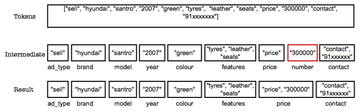

Part of a series on extracting information from semi-structured text, starts here
Introduction
With a knowledge base of known terms built, we now move to identifying labels in a test corpus that can be assigned to a sub-sequence of strings. Given an accurate KB, this step can extract all information, given all sub-sequences in a document are known. We follow a simple sequential algorithm to identify blocks and label them into categories. We mark sub-sequences that we cannot categorise as “unknown”. We leave identification of “unknown” sub-sequences to later steps.
Alogrithm
Assuming that a document (an advertisement in the example domain) has already been tokenised, we follow the steps below.
- pick the first token, find it in the KB
- if found, create a tuple of label:[list of words] and insert word in the list
- get the next token, find the label. if it belongs to the same label, append the word to the list.
- if the token doesn’t belong to the same label, go back to 2.
- if no label is found, mark it as ‘unknown’. do not append ‘unknown’ tuples together.
- for each new token, either append to the previous token’s tuple, or create a new tuple.
The result is a sequencial list of tuples (blocks) which together represent the document.
Improvements
The simple algorithm above works well when there is no ambiguity in finding labels for a word. There are 2 cases which add complexity – * A token is not in the KB. We leave the probabilistic models to help us assign a label to such word/sequence * A token is can be categorised under 2 labels.
To help fix a label to the latter, we assign it an intermediate label, look for the next or previous token’s label and see if this token can be continuance. For instance, in our example domain, a 5-6 digit numeric string can represent a price or kilometers driven for a vehicle. We assign it a token called ‘number’. We then analyse the previous and next tokens to see if this ‘number’ can be merged with the previous or next tokens’ labels. If this ‘number’ comes after ‘price’, we assume that the token under analysis can be categorised as ‘price’. If this ‘number’ has no neighbours that can logically follow, we revert to marking it as ‘unknown’.
The following code explains this process.
1 2 3 4 5 6 7 8 9 10 11 12 13 14 15 16 17 | |
The merge method in the block object takes care of combining intermediate states to known labels or discarding them as “unknown”
For an advertisement tokenised as
[“sell”, “hyundai”, “santro”, “2007”, “green”, “tyres”, “leather”, “seats”, “price”, “300000”, “contact”, “91xxxxxxx”]
blocking and labelling output may be

Results
We have seen that blocking and labelling has been able to extract information from a document to the accuracy of close to 85%. This is true for documents which have known text strings. The rest can be marked down to new strings which we do not know about. For numerical sequences we have seen our accuracy numbers change depending on the way numbers are mentioned in the document.